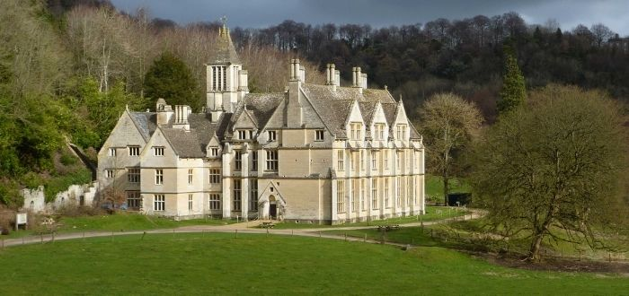
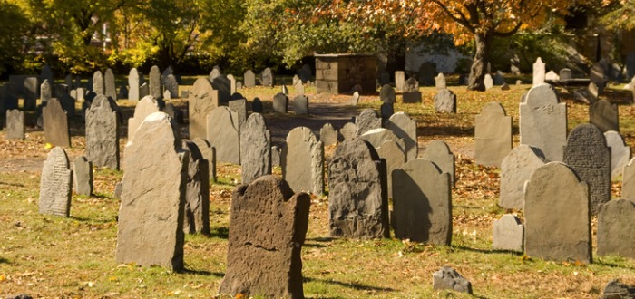
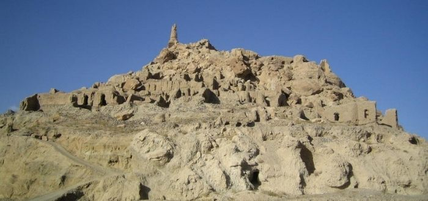

lugares malditos
La Mansión Woodchester, en Inglaterra
Mansión Woodchester. Su arquitectura gótica ya le da un aspecto bastante espeluznante. Esta mansión sustituyó a la casa anteriormente erigida allí, bautizada como Primavera Park. Sir William Leigh fue el propietario de Primavera Park y decidió demolerla y construir en su lugar a la Mansión Woodchester, pero antes de poder terminar por completo la obra cayó en bancarrota. Finalmente, Leigh murió en 1873 sin poder finalizar su amada mansión. Pero lo que se cree que convirtió a esta imponente casa en uno de los lugares malditos más sonados, fue lo que vino después. La propiedad permaneció en manos de la familia de Leigh, hasta que en 1938 fue vendida. Durante la Segunda Guerra Mundial fue utilizada como base de los ejércitos canadienses y estadounidenses. Se dice que una gran cantidad de espectros de los soldados muertos en batalla habitan este siniestro edificio. También algunas personas afirman haber visto a William Leigh rondar por los pasillos.
El pueblo de Salem, en Massachusetts, Estados Unidos
Si de lugares malditos hablamos, parada obligatoria debemos hacer en el espectral pueblo de Salem. Los juicios de las brujas de Salem pasaron a la historia como uno de los sucesos más oscuros de Norteamérica. En ellos, unas veinte mujeres fueron ahorcadas, acusadas de hacer pactos con el diablo y lanzar embrujos malignos contra los niños del pueblo. Quienes saben de las leyendas regionales cuentan que Bridget Bishop, la primera mujer en ser ahorcada, se aparece en los alrededores del que antes fuera un huerto de manzanas de su propiedad. En todo el pueblo se respira un aura de malignidad, que no se diluye con el paso de los años.
Las ruinas de Shar-e-Golgola, en Afganistán
Muchos de los más aterradores lugares malditos de la tierra guardan una estrecha relación con los horrores de la guerra. La ciudad de Shar-e-Golgola, en Afganistán, es conocida como la ciudad de los gritos. Su historia es terrible desde tiempos inmemoriales. Fue la capital del pueblo Ghorid, hasta la toma hecha por el ejército mongol, en el siglo XII. En esos tiempos lejanos el conquistador Gengis Khan perdió a su hijo favorito a manos del entonces gobernador de la ciudad, Jalaludin. Tan desmedida fue su ira que ordenó asesinar cruelmente a todos los habitantes de la ciudad. De allí en más, Shar-e-Golgola ha sido el escenario de batallas entre norteamericanos, rusos o talibanes. En la actualidad está reducida a unas ruinas, en las que se creen que conviven las almas atormentadas de todos aquellos que murieron allí de forma inmerecida.
Seguimos conociendo los más interesantes lugares embrujados del mundo, viajando ahora a las ancestrales tierras de La India. El Fuerte Bhangarh ubicado en Rajastán, extiende imponente sus ruinas recordándonos la bonanza y las glorias de su pasado. Pero en la actualidad esas ruinas solo nos hablan de terror. Cuenta la leyenda que el lugar está embrujado, y que al caer los últimos rayos de luz más vale que te encuentres muy lejos, pues es la hora en que los espíritus de humanos y demonios que habitan el lugar, salen a recorrerlo. Tan sólida es la creencia popular al respecto, que incluso el gobierno colocó un cartel en el cual se prohíbe ingresar al sitio después de la puesta del sol y antes del amanecer.

el salvador
gip_hup dark599
emanuelcanas40@gmail.com